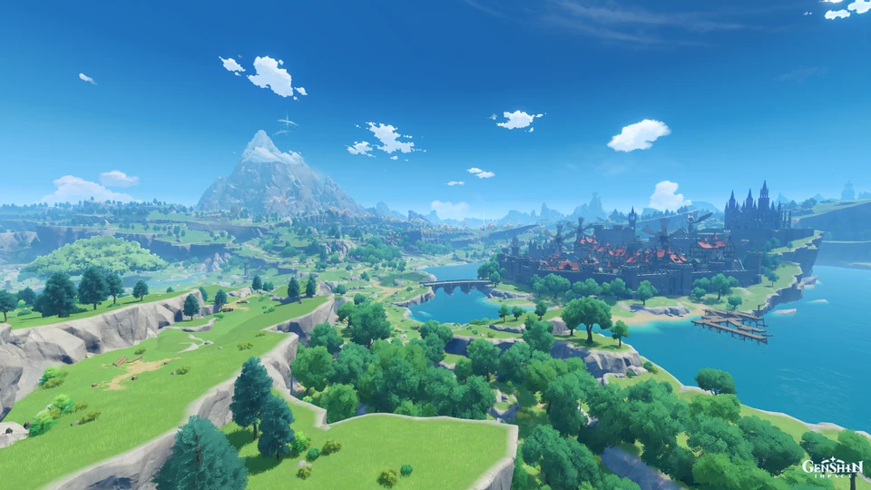

Mondstadt · Geography & Locations
Mondstadt: The City of Freedom
Mondstadt is one of Teyvat’s seven nations. Its story is tied to the Anemo Archon Barbatos and the ideal of freedom.

The Cradle of Freedom in the North
Situated in the northeast of the continent of Teyvat, Mondstadt is the realm of the Anemo Archon Barbatos and the historical birthplace of the philosophy of mortal liberty. Surrounded by Cider Lake and protected by limestone battlements and turning windmills, the city of Mondstadt stands as an open sanctuary where artists, bards, vintners, and travelers mingle freely without aristocratic decrees or religious mandates.
Mondstadt's geography is remarkably diverse: from the fertile vineyards of Dawn Winery and the peaceful springs of Springvale to the howling winds of Stormbearer Point, the ancient ruins of Stormterror's Lair, and the looming, snow-swept frozen peaks of Dragonspine in the south. The land is cooled by perpetual breezes that carry the sweet scent of Dandelion seeds and Cecilias across the grassy hills.
Historical Foundations: Rebellion Against Two Tyrannies
Mondstadt's culture of freedom was forged through two bloody revolutions. The first occurred 2,600 years ago when the poet-bard and the wind sprite Barbatos overthrew Decarabian, the God of Storms, shattering the frozen storm walls of Old Mondstadt. The second revolution occurred 1,000 years ago, after the noble Lawrence Clan corrupted the nation into an aristocratic slave state; the gladiator slave Vennessa, aided by the returned Barbatos and the dragon Dvalin, overthrew the tyrants and established the Knights of Favonius.
Because its liberty was twice bought with blood, the people of Mondstadt fiercely resist any centralization of authoritarian power. While the Knights of Favonius handle municipal defense and the Church of Favonius preserves spiritual rituals, neither body claims sovereign royal ownership over the citizens.
The Four Winds and Elemental Protectors
To ensure Mondstadt would remain safe while he wandered the world in freedom, Barbatos appointed the Four Winds to watch over the realm: the Dragon of the East (Dvalin), the Wolf of the North (Andrius / Lupus Boreas), the Lion of the South (the Grand Master of the Knights of Favonius, inherited from Vennessa), and the Falcon of the West (Vennessa herself following her celestial ascension).
Even when mortal memory fades or dragons fall into corrupted slumber, these ancient spiritual guardians remain anchored to Mondstadt's soil. In moments of dire peril—such as the Cataclysm five hundred years ago when the abyssal shadow dragon Durin invaded—the winds united to defend the city and cast the monster down into the frozen wastes of Dragonspine.
Mysteries on the Northern Frontier
While often viewed by foreign diplomats as peaceful, sleepy, and drunk on Dandelion Wine, Mondstadt harbors some of the most dangerous metaphysical secrets in Teyvat. Beneath the Cathedral sits the forbidden vault holding ancient relics; within the mountains sits Albedo, the homunculus created by the outlaw alchemist Rhinedottir; and to the north lies the mysterious gateway toward Nod-Krai and the Dark Sea where Grand Master Varka leads Mondstadt's elite expedition.
As the first nation to welcome the Traveler, Mondstadt represents both the start of the journey and an enduring emotional home. Its people live by the joyful wisdom of their unseen god: 'Fly, fly away; like a bird in the sky, bear the world's sorrows with song.'
This is an original CoreGG reading guide, not an official HoYoverse article or a reproduction of the game text. Source links below identify the records used so you can check the original context.
Sources & references
Check these sources for the original game text and reference trail.